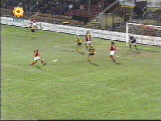
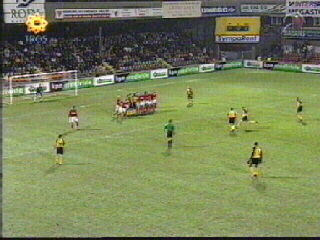
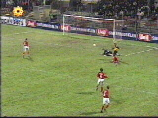
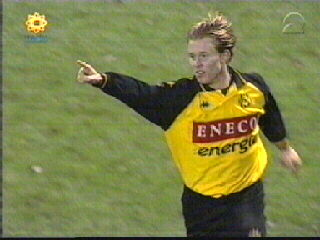
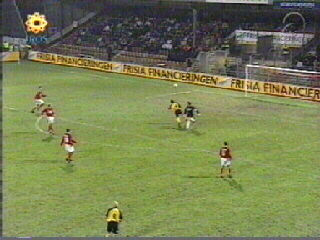
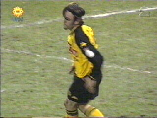
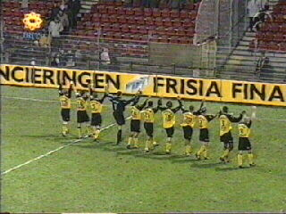

|
AZ - Roda JC 1-2 8 december 2001 |

Van Galen legt Kromkamp de bal panklaar in de
voeten: 1-0 (6).

In de 13e min. neemt Luypers een vrije trap: 1-1.

Berglund loopt Opdam eruit en passeert doelman
Moens: 1-2 (60e min.).

Het eerste competitiedoelpunt van de Zweed.

In de slotfase krijgt Ivelich een aardige kans om
te scoren, maar hij kopt naast.


Het publiek wordt bedankt en Roda klimt in de
competitie van de 18e naar de 13e plaats.
©KPD